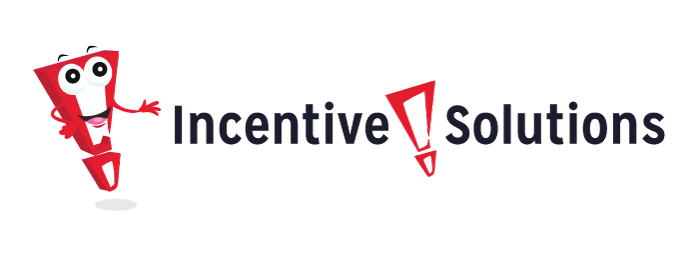

Contents
Incentive Solutions
What is Incentive Solutions?
Incentive Solutions is a B2B SaaS software that specializes in channel managment and corporate incentive programs.
In this case study, I will be sharing my process and rationale behind some of my decisions that I made redesigning parts of the Incentive Solution website. Ultimately increasing conversioin and user engagment
Why redesign?
To answer this, let's take a look at the old website's design. The old design wasn’t doing well in terms of making sales or in convincing users to download convert. The website was generating around 60 leads a month and about half of those were qualifed.

REASON FOR THAT ?
To find the answers, I started my research by going through the customer feedback we'd gotten through our clients that converted. As well as feedback from our sales team on sales that we had lost.
Some of the commonalities in feedback I recieved were
- For a technology company the website looked dated.
- The majority of users didn't find the website helpful.
- Users wanted to know more about the products features.
- Little to no feature shots of the product that was being sold.
COMPETITIVE ANALYSIS
I did a competitive analysis and tried to find out what they were doing better. Watched sales demos and I also worked in the software and got a good understanding of what we sell thorugh those expereinces. Think through how the software work, and how it is different.
Key things that I realized after my research, were :
BRAND PERSONALITY
I was brought on almost immediately after Incentive Solutions rebranded, so while I didn't get to control this. I figured out what pieces of their branding would work best with my vision.

Colors
I used their secondary Blue (#27306a) alot as the blue is a very welcoming and calming color. I always made our CTA buttons red because of the urgency it helped create as well as it's high contrast ratio with the other colors they use.
Typeface
As stated Incentive Solutions rebranded just before hiring myself, they decided to use Arial as their typeface, which posed a bit of a challenge in terms of trying to make things pop out since it's such a standard typeface, but I got it to work.
DIRECTION
When I create landing pages for products, I prefer to showcase the product first and foremost. After discussing with the head of marketing some more I decided that we should rely more on shots of the product as noted, they were sorely missed from the site.
INFORMATION
Yes, now the important part - Talking more about the product, by providing valuable information about it to our users/visitors.
So, let's get back to the problems again.
- Users thought the website looked dated, therefore not very trustworthy.
Users wanted to know more about the products features.
And now how can we solve that ?There are quite a lot of features, and adding all of them to the homepage might make the landing page super lengthy and cluttered. So, let's have a section with a preview of some of the features, and we can give the users an option to deep dive into the details, by directing them to a dedicated page for all the app features.
Users wanted to know what the product looked like.
So, ya let's go and solve this too.
Had a quick chat with the PM to know about the process myself, and realized that it definitely needs a dedicated page too. So, let's have a 'How it works' section, with an option to read more about the therapy process on a separate page.
SITEMAP
The product team has decided to have a blog running alongside their site, to raise awareness about the issues regarding stammering & stuttering. This will drive engagement with users regularly too. So we will add a section with previews of some blogs, and likewise an option to jump over to the blogs directly from the Landing page. Image showing the new structure of the redesigned site After taking notes from 'Gaining Trust', and tackling issues related to the Information, here's what the new Information Architecture (IA) of the website looks like.
LET'S START DESIGNING
So, I started off with wireframes and designed a basic layout for the landing page design with respect to the IA we already created.
- Wireframes
Created wireframes for the homepage, based on both desktop & mobile/tablet viewports.
- Styling
So, now time to add styling to this layout. Will be adding the colors and font styles, as well as the illustrations we discussed in Brand Personality and Direction section.
FINAL DESIGNS
Here's a look at some of the updated pages on the site.
Info
Website
incentivesolutions.com
Timeline
January 2020-Now
TOOLS
- Adobe XD
- Illustrator
- After Effects
- Wordpress
- HTML/CSS
- JavaScript
DISCIPLINES
- UI/UX Design
- UX Research
- UX Writing
- Web Development